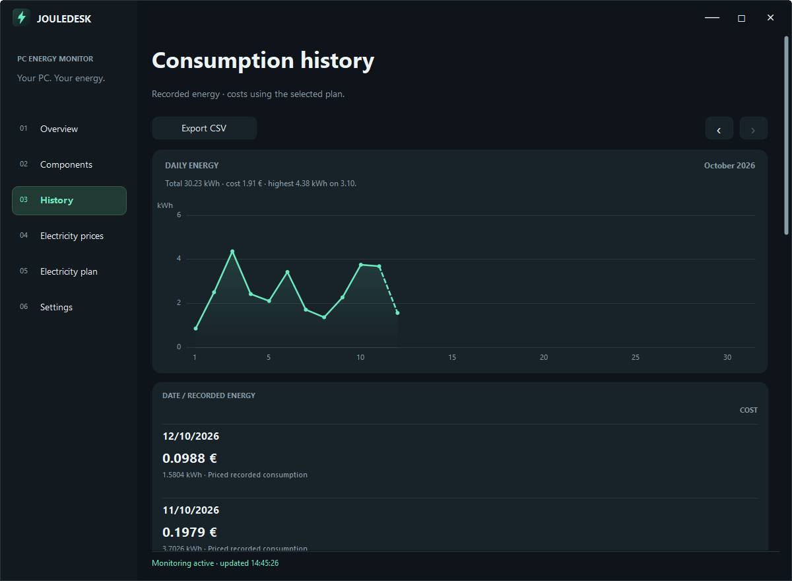
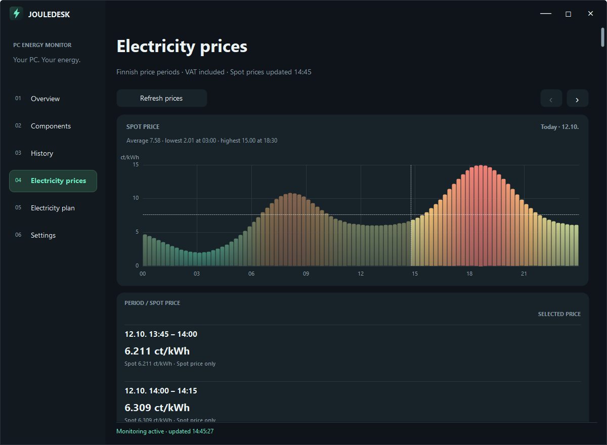
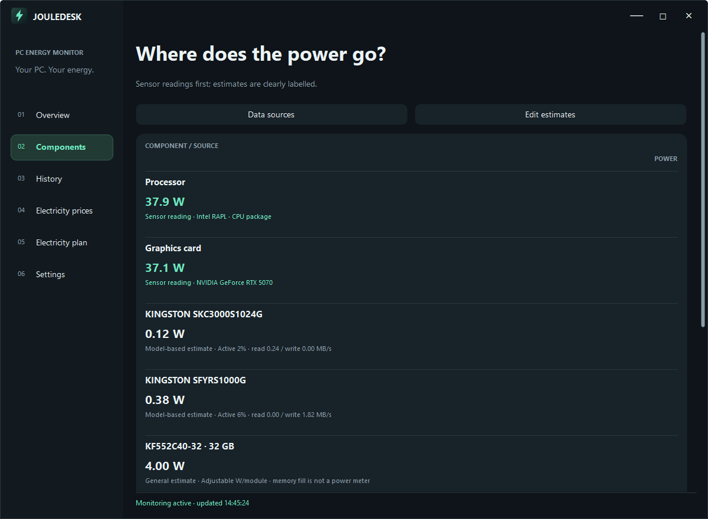
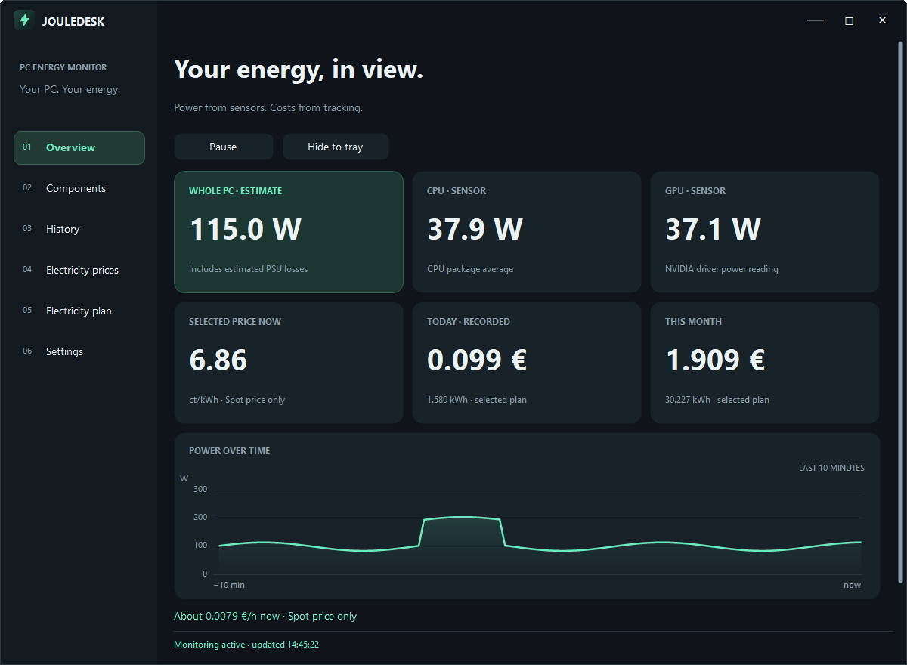

See what your PC's electricity use costs
JouleDesk shows how much power your Windows computer draws and what that costs, live, per day and per month. It needs no smart plug, power meter or other extra hardware.
Free and open source (MIT) · Windows 10 and 11, 64-bit · version 1.0.0
What it does
No extra hardware
The processor's power comes from the energy counter Windows already keeps, the NVIDIA graphics card's power from its driver, and the rest is estimated. Every figure says which kind it is.
Your electricity prices
Prices the energy with Finnish spot prices, spot plus your contract charges, or a fixed price. Switch plans and the recorded energy is priced again, so you can compare.
History and daily prices
A curve of the energy used each day of a month, the cost, a CSV export, and a chart of the day's spot prices from cheap to expensive.
Stays on your PC
No account, no cloud and no telemetry. Your consumption and hardware are never sent anywhere. It only fetches the day's spot prices.
Screenshots




Questions
Do I need a smart plug or a power meter?
No. JouleDesk estimates the draw at the wall from the processor and graphics card readings plus labelled estimates for the rest. The result is an estimate, not a wall-socket measurement; a plug-in energy meter is only needed if you want to measure that.
Which computers does it work on?
It needs Windows 10 or 11 (64-bit), a processor whose package energy counter Windows exposes (Intel processors do) and an NVIDIA graphics card with its driver. Without both readings nothing is recorded. Other hardware has not been tried, and you can tell what works for you in the discussion about compatibility.
Why does Windows warn me about the installer?
The installer is not code-signed, so Windows SmartScreen may show a warning. Choose "More info" and then "Run anyway". The release page lists the SHA-256 checksum of the installer, so you can check your download.
Is anything sent anywhere?
No data about you or your computer. The app fetches the Finnish spot prices from the free Pörssisähkö.net service about twice a day, and, if you enter an address, a drive profile catalog from it. The privacy section lists everything it stores and every connection it makes.
Which prices does it use?
Finnish spot prices with VAT, in euros and Finnish time, or your own contract: spot price plus your margin, distribution charge and electricity tax, or a fixed price plus distribution and tax.
How do I remove it?
Uninstall JouleDesk from Windows' list of installed apps. Your recorded data stays in %LOCALAPPDATA%\JouleDesk until you delete that folder.